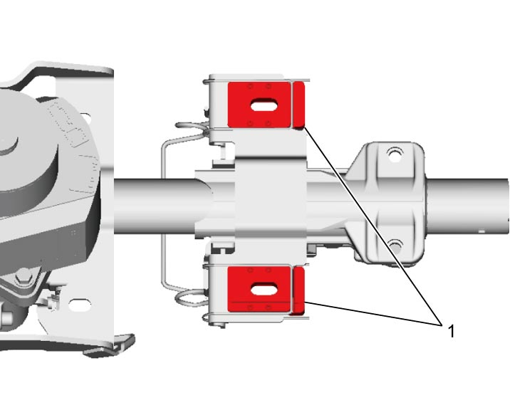
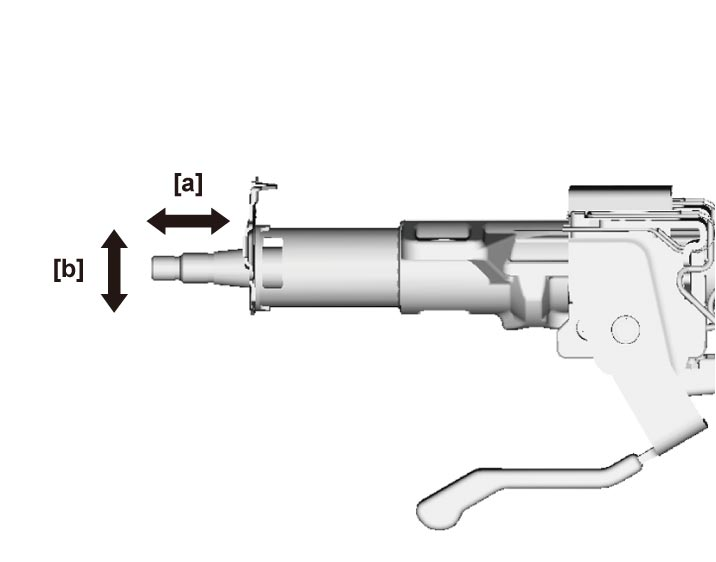
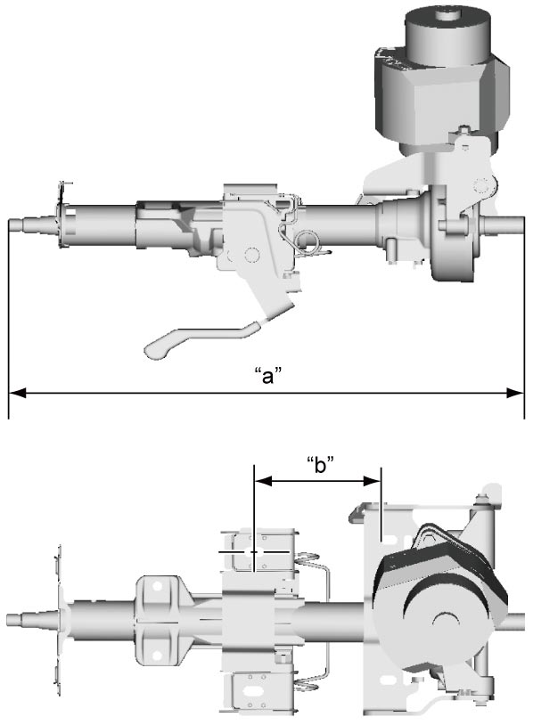
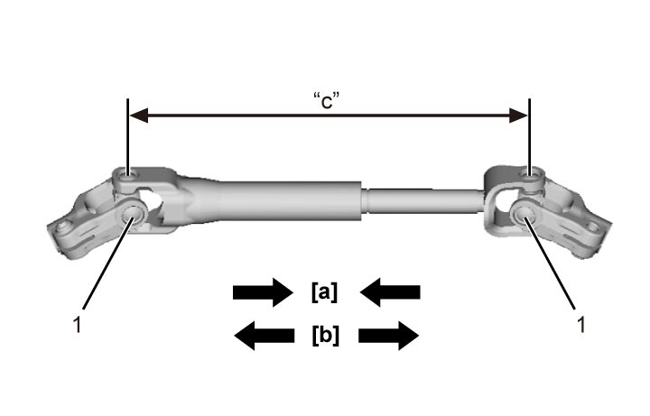

6B
| Steering Column Inspection |
NOTE:
Steering column assembly should be checked if vehicle was involved in an accident and steering column assembly was exposed to impact or air bag deployed.
Perform the following checks if damage to steering column assembly is suspected. If check result is not OK, replace steering column assembly with new one.
•Check that two capsules (1) are attached to steering column bracket securely.
 •Check steering column shaft for looseness in arrow directions [a] and [b] in figure with telescopic and tilt lever or tilt lever locked.
•Check steering column shaft for looseness in arrow directions [a] and [b] in figure with telescopic and tilt lever or tilt lever locked.
•Check that distances “a” and “b” shown in figure are as specified.

 "Expand image")

 "Expand image")
Power steering column length
“a”: 504.5 mm (19.86 in.) (fully extended) / 468.5 mm (18.44 in.) (fully retracted)
“b”: 118.1 ± 1.5 mm (4.65 ± 0.059 in.)

 "Expand image")
Perform the following checks if damage to steering lower shaft is suspected. If check result is not OK, replace steering column assembly with new one.
1.Adjust distance “a” between yoke centers of steering lower shaft bearing to 277.5 mm (10.92 in.).
2.Then check that steering lower shaft retracts by 10 mm (0.39 in.) or more and extends by approx. 10 mm (0.39 in.) from distance “a”.
2.Then check that steering lower shaft retracts by 10 mm (0.39 in.) or more and extends by approx. 10 mm (0.39 in.) from distance “a”.

 "Expand image")
| [a]: | Retracts by 10 mm (0.39 in.) or more | 1. | Yoke |
| [b]: | Extends by approx. 10 mm (0.39 in.) |
•Check steering lower shaft joint for wear, breakage and any other damage.